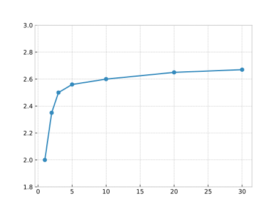

Yield Curve, Zero rates and Term Structure#
Introduction#
Before starting my studies in Quantitative Finance I was working for a while in the banking sector and I was able to see some interesting topics other divisions were working on. The Fixed Income division, among the others, is the one that caught my attention. There was just one problem - I was able to understand very little of what they would be discussing or talking about. Some of the topics that I remember hearing a lot about were yield curve and forward rates.
Yield curve was the winner between the two when it comes to the number of times it was mentioned. Without a strong background in Finance I knew very little about what the yield curve actually is and even less about what it tells us.
With time, I have come to gain a fairly good grasp of what it is and also what it is not, and the aim of this article is to share my knowledge with hope that someone who is in a similar situation as I was two years ago may find it useful :)
Bonds#
To be able to understand what kind information is contained in the yield curve, we must have a look at a bonds. Bond is an instrument used to issue debt which promises a payment (or a series of payments) of fixed amounts at fixed future dates. We can differentiate between:
Zero Coupon (ZC) Bonds
Coupon Bonds with fixed coupons
Coupon Bonds with floating coupons
Note
We will have a brief look at ZC bonds and coupon bonds with fixed coupons, while the floating coupon bonds will be covered in another article.
ZC bond is the simplest possible bond, and it promises a single fixed payment at some future date which is called the maturity. The money received at maturity is called the principal of the bond and it is (usually) set to be equal to 100. You can imagine a ZC bond as a piece of paper that holds the following information:
Issuer: The party that wrote that paper and is selling it
Maturity date: The date at which the principal will be repaid
Principal amount: Usually is 100
Imagine that there exists a bond which promises a payment of \(100\) in exactly two years from now and that such bond is currently trading at the price of \(98\). That means that if I buy that bond now for \(98\) I will have \(100\) in two years, so I can calculate what is the return (\(r\)) of such investment:
The annualized return of such investment would be \(1.015\%\).
Now let us examine a bond that promises a payment of \(100\) in exactly two years, but this time we would also receive a coupon amounting to \(5\) every 6 months (including the maturity). If such a bond is trading at \(99\) and we wanted to calculate the return of such invesment we would need to determine what value of \(r\) satisfies the following equation:
This is not so easy to calculate as in the example above, but there are numerical procedures that would give us the result. Luckily, this is something that you would never calculate yourself. Why? Because this is already provided by many data vendors like Bloomberg or Refinitiv. My goal here was to show conceptually how that number is calculated.
Note
If you are curious, you can use one of the many calculators available online that will calculate this for you. The one I used calculated that the return of such investment is
Yield to Maturity (YTM)#
Now that we have covered how to calculate the return, we need to say what that number is. Very simply, the return \(r\) is called yield to maturity and it is a rate of return that the investor would realize if the investor was to hold the bond until maturity.
Now imagine that instead of only one bond with two years maturity, we have a whole set of bonds with different maturities. For example let us imagine this set of bonds (with their YTMs calculated like we did above):
Bond |
Maturity (in years) |
YTM |
|---|---|---|
Bond A |
1 |
2% |
Bond B |
2 |
2.35% |
Bond C |
3 |
2.5% |
Bond D |
5 |
2.56% |
Bond E |
10 |
2.6% |
Bond F |
20 |
2.65% |
Bond G |
30 |
2.67% |
If we would now plot these YTMs against the maturity we would get the following result. 